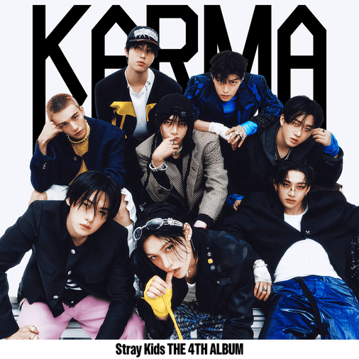

THE TRACK / LYRICRACHA
IN MY HEAD
Stray Kids
- ALBUM
- KARMA
- RELEASE
- 2025.08.22
- UPDATED
- 2026.08.28
- LANGUAGE
- KOREAN / ENGLISH
- LYRICS
- BANG CHAN, CHANGBIN
- COMPOSED
- BANG CHAN, CHANGBIN, JUN2
02 / THE VOICES
Part Colors
03 / LYRIC DATABASE
Lyrics
ヘイ、ユー、ライイング イン ユア ベッド
Hey, you, lying in your bed
ねえ、君、ベッドに横たわって
ステアリング アット ザ シーリング、イェ、アイ ソート ザット ユー ワー デッド
Staring at the ceiling, yeah, I thought that you were dead
天井を見つめてるね。まるで死んでしまったかのように
ワッツ ゴーイング オン イン ユア ヘッド？
What’s going on in your head?
君の頭の中では何が起きてるんだろう？
イェ
Yeah
うん
トゥデイ、ユー シンク ゼアル ビー ア チェンジ
Today, you think there’ll be a change
今日こそ変わると思った？
ソーリー、バット ノー マター ワット、イッツ ゴナ ビー ザ セイム
Sorry, but no matter what, it’s gonna be the same
ごめん、でも結局何をしても同じだよ
アイ カインダ フィール バッド、ユー オーケー？
I kinda feel bad, you okay?
なんだか悪い気がするけど、大丈夫？
オー、アイヴ ダン エブリシング、アイヴ ダン イット オール
Oh, I’ve done everything, I’ve done it all
ああ、もう全部やり尽くした
さらんえ たっとぅったむど ぬっきょぼぁっち
사랑의 따뜻함도 느껴봤지
愛の温もりも感じたよ
バット アイム ゴーン、ホエア イズ マイ マインド ヘディド フォー？
But I’m gone, where is my mind headed for?
でも僕はもう、頭の中はどこへ向かってるんだろう
とぅとんい しめ なん
두통이 심해 난
ひどい頭痛がするんだ
アイム メスド アップ イン マイ ヘッド
I’m messed up in my head
頭の中がめちゃくちゃだ
アーイェ、アーイェ
Ah-yeah, ah-yeah
ああ、ああ
むぉっかとぅん いるさんえ
뭣같은 일상에
くだらない毎日の中で
アーイェ、アーイェ
Ah-yeah, ah-yeah
ああ、ああ
ホエン ウィル イット エヴァー チェンジ？
When will it ever change?
いつになったら変わるんだろう？
とでちぇ うぇ いろぬんじ もるげっそ
도대체 왜 이러는지 모르겠어
どうしてこんなふうになっちゃうんだろう
アイム メスド アップ イン マイ ヘッド
I’m messed up in my head
頭の中がめちゃくちゃだ
アーイェ、アーイェ
Ah-yeah, ah-yeah
ああ、ああ
アイム メスド アップ イン マイ
I’m messed up in my
頭の中がめちゃくちゃだ
きょう ふるりょぼねん しがな
겨우 흘려보낸 시간아
やっと過ぎ去った時間よ
なるる ちゃっち まらじょ、ゲット オフ ミー
나를 찾지 말아줘, get off me
僕を探さないで、離してくれ
いぇご おむぬん い タイム ボム
예고 없는 이 time bomb
予告なしに爆発するタイムボム
ぬが もるり とんじょじょ、くぇろうに？
누가 멀리 던져줘, 괴로우니?
誰か遠くに投げてよ、つらいんだ
ぽんぽん しど てど おぷし とじょ
펑펑 시도 때도 없이 터져
いつでも突然、破裂する
そくさぎどん ちゃぷせんがくどぅれ そりが こじょ
속삭이던 잡생각들의 소리가 커져
ささやいていた雑念の声が大きくなる
ぱるごるむん うぃむぬん まじのそね ごるちょ
발걸음은 의문의 마지노선에 걸쳐
一歩踏み出す前に疑問の境界線に立ち止まる
アイム ストップト ビフォー テイキング ア ステップ フォワード
I’m stopped before taking a step forward
踏み出す前で止まってしまう
もみらど ひむどぅるみょん ちょむ どるはるか ぼぁ
몸이라도 힘들면 좀 덜할까 봐
体が疲れていれば少しは楽になるかな
くぇに と きょかげ ぶでぃちょんな ぼぁ
괜히 더 격하게 부딪쳤나 봐
無駄に激しくぶつかっちゃったみたい
もりっそげ ちゅんしむん あん ちゃびご
머릿속의 중심은 안 잡히고
頭の中の中心は定まらず
うぃてろぷけ ふんどぅるりょ、ホエン ウィル ディス エンド？
위태롭게 흔들려, when will this end?
不安定に揺れてる、これいつ終わるんだろう？
オー、アイヴ ダン エブリシング、アイヴ ダン イット オール
Oh, I’ve done everything, I’ve done it all
ああ、もう全部やり尽くした
さらんえ たっとぅったむど ぬっきょぼぁっち（ぼぁっち？）
사랑의 따뜻함도 느껴봤지 (봤지?)
愛の温もりも感じたよ
バット アイム ゴーン、ホエア イズ マイ マインド ヘディド フォー？
But I’m gone, where is my mind headed for?
でも僕はもう、頭の中はどこへ向かってるんだろう
とぅとんい しめ なん
두통이 심해 난
ひどい頭痛がするんだ
アイム メスド アップ イン マイ ヘッド
I’m messed up in my head
頭の中がめちゃくちゃだ
アーイェ、アーイェ
Ah-yeah, ah-yeah
ああ、ああ
むぉっかとぅん いるさんえ
뭣같은 일상에
くだらない毎日の中で
アーイェ、アーイェ
Ah-yeah, ah-yeah
ああ、ああ
ホエン ウィル イット エヴァー チェンジ？
When will it ever change?
いつになったら変わるんだろう？
とでちぇ うぇ いろぬんじ もるげっそ
도대체 왜 이러는지 모르겠어
どうしてこんなふうになっちゃうんだろう
アイム メスド アップ イン マイ ヘッド
I’m messed up in my head
頭の中がめちゃくちゃだ
アーイェ、アーイェ
Ah-yeah, ah-yeah
ああ、ああ
（エヴリバディ）
(Everybody)
（みんなで）
アイム メスド アップ イン マイ ヘッド
I’m messed up in my head
頭の中がめちゃくちゃだ
アーイェ、アーイェ
Ah-yeah, ah-yeah
ああ、ああ
むぉっかとぅん いるさんえ
뭣같은 일상에
くだらない毎日の中で
アーイェ、アーイェ
Ah-yeah, ah-yeah
ああ、ああ
アイム メスド アップ イン マイ ヘッド
I’m messed up in my head
頭の中がめちゃくちゃだ
アーイェ、アーイェ
Ah-yeah, ah-yeah
ああ、ああ
むぉっかとぅん いるさんえ
뭣같은 일상에
くだらない毎日の中で
アーイェ、アーイェ（ウー；レッツ ゴー）
Ah-yeah, ah-yeah (Woo; Let’s go)
ああ、ああ（ウー；行こう）
（ウー；レッツ ゴー）
(Woo; Let’s go)
（ウー；行こう）
アイム メスド アップ イン マイ ヘッド
I’m messed up in my head
頭の中がめちゃくちゃだ
（アイム メスド アップ イン マイ ヘッド）
(I’m messed up in my head)
（頭の中がめちゃくちゃだ）
アーイェ、アーイェ
Ah-yeah, ah-yeah
ああ、ああ
むぉっかとぅん いるさんえ
뭣같은 일상에
くだらない毎日の中で
（アイ ノウ アイム メスド アップ イン マイ ヘッド）
(I know I’m messed up in my head)
（わかってる、頭の中がめちゃくちゃだって）
アーイェ、アーイェ
Ah-yeah, ah-yeah
ああ、ああ
（イェ）
(Yeah)
（うん）
ホエン ウィル イット エヴァー チェンジ？
When will it ever change?
いつになったら変わるんだろう？
とでちぇ うぇ いろぬんじ もるげっそ
도대체 왜 이러는지 모르겠어
どうしてこんなふうになっちゃうんだろう
（ウォー、ウォー、ウォー）
(Woah, woah, woah)
（ウォー、ウォー、ウォー）
アイム メスド アップ イン マイ ヘッド
I’m messed up in my head
頭の中がめちゃくちゃだ
（ヘイ、ヘイ、ヘイ）
(Hey, hey, hey)
（ヘイ、ヘイ、ヘイ）
アーイェ、アーイェ
Ah-yeah, ah-yeah
ああ、ああ
アイム メスド アップ イン マイ ヘッド
I’m messed up in my head
頭の中がめちゃくちゃだ